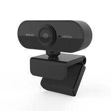
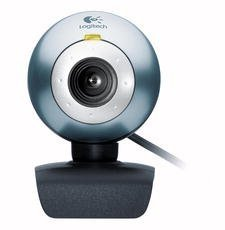

En el Departamento de Informática de la Universidad de Cambridge la cafetera estaba situada en un sótano. Si alguien quería un café tenía que bajar desde su despacho y, si lo había, servirse una taza. Si no lo había, tenía que hacerlo a mano. Las normas decían que el que se termina la cafetera debe rellenarla, pero siempre había listos que no cumplían con las normas.
En 1993 Quentin Stafford-Fraser y Paul Jardetzky, que compartían despacho, hartos de bajar tres plantas y encontrarse la cafetera vacía decidieron pasar al contraataque. Diseñaron un protocolo cliente-servidor que conectándolo a una cámara, transmitía una imagen de la cafetera a una resolución de 128 x 128 píxeles.
Así, desde la pantalla de su ordenador sabían cuándo era el momento propicio para bajar por un café, y de paso sabían quiénes eran los que se acababan la cafetera y no la volvían a llenar. El protocolo se llamó XCoffee y tras unos meses de depuración se decidieron a comercializarlo. En 1992 salió a la venta la primera cámara web llamada XCam.
Una webcam o webcam 1 (en inglés: webcam) es una pequeña cámara digital conectada a una computadora que puede capturar imágenes y transferirlas a páginas web u otras computadoras de manera privada a través de Internet. La cámara web requiere una computadora para transmitir imágenes. Sin embargo, existen otras cámaras autónomas que solo requieren un punto de acceso a la red informática, ya sea Ethernet o inalámbrica. Para distinguirlos de las cámaras web, se denominan cámaras web. Ambos son aptos para tareas de seguridad, para videovigilancia.
Además del uso cotidiano, es frecuente la aplicación de cámaras web de cierta calidad en diferentes áreas de la investigación científica. Por ejemplo, en la astronomía de aficionado, las cámaras web de cierta calidad pueden ser utilizadas para registrar tomas de satélites lejanos y estrellas.
Características Generales
1º Característica
Las cámaras Web vienen en diferentes tamaños y formas con la finalidad de agradar y satisfacer a las necesidades del consumidor.
2º Característica
El diseño de las cámaras es muy específico para diferentes aplicaciones como videoconferencias, video vigilancia, entre muchas más. Algunas cámaras dependiendo del modelo, tienen lente giratoria de hasta 360° , unas se adjuntan al monitor del equipo , otras traen un soporte o base adaptable y microfono integrado.
3º Característica
Generalmente, la definición estandar de baja resolucion de video (se refiere a la calidad de una grabación de video de cámara web) es aproximadamente 640 X 480 píxeles ya que requiere menos ancho de banda de internet y de los recursos del sistema. Los videos de alta definición de hasta 720p (1280 × 720 píxeles) y 1080p (1920 × 1080 píxeles) provee mejor calidad de video pero resultan lentos con las conexiones a Internet existentes.
4º Característica
Las cámaras web de menor calidad se limitan a sensores 1 MP o 2 MP, lo que les permite capturar imágenes de hasta 2048 por 1536 píxeles. Por otro lado las mejores cámaras tienen capacidad de foto de 10+ MP lo que significa que capturan imagen de hasta 3072 por 2304 píxeles.
5º Característica
La velocidad de internet afectará totalmente la calidad de grabación de la cámara web. Si se tiene una velocidad lenta una cámara web de alta resolución y alta velocidad de fotogramas no tendrá suficiente ancho de banda para transmitir a través de Internet correctamente.
6º Característica
Las cámaras Web vienen en diferentes tamaños y formas con la finalidad de agradar y satisfacer a las necesidades del consumidor.
7º Característica
Zoom o distancia focal fija. Existen dos tipos de lentes: de distancia focal fija y de zoom. Los lentes de distancia focal fija tienen una distancia focal fija y los lentes de zoom tienen distancias focales variables.
Por un lado, la ventaja del lente de zoom es su versatilidad. Son ideales cuando está fotografiando a una variedad de objetivos como los paisajes y retratos, y usted solo quiere un lente para ambas situaciones. Mientras que por el otro lado las webcams con lentes de distancia focal fija también tienden a tener una apertura máxima más grande (f/1.4 a f/2.8). Esta es una ventaja cuando el disparo se realiza en situaciones con poca luz
Tipos de WebCams
Profesional

Este tipo de WebCams son muy costosas ya que cuentan con una mayor calidad de video y se suelen utilizar en los ámbitos profesionales como por ejemplo para hacer Stream para Twich o Youtube.
Amateur

Suelen ser de las más baratillas y las podemos encontrar por unos 50 euros, son muy útiles para la vida cotidiana, el trabajo diario...
¿Cómo funciona la WebCam?
El funcionamiento de una webcam es muy simple: una cámara de vídeo toma imágenes y las pasa a un ordenador que las traduce a lenguaje binario y las envía a través de internet para disfrute de todo aquel que quiera verlas. Este proceso consta de 4 fases:
1.Su cámara toma imágenes que envía regularmente a un ordenador, algunas se actualizan cada pocos segundos y otras cada varias horas.
2.El ordenador mediante el hardware/software adecuado, traduce las imágenes a formato binario, generalmente ficheros de imágenes jpeg, dada su buena relación calidad/tamaño.
3.Las imágenes ya traducidas son incluidas dentro de una dirección de Internet, lo que les proporciona la posibilidad de ser vistas en toda la red, de manera que está siempre disponible la imagen más reciente. Así, cuando alguien solicita la página de una webcam, puede ver en su navegador la última imagen tomada por la misma.
4.Existen webcams cuyo ritmo de refresco es muy alto y que pueden llegar a dar la sensación de transmitir imágenes de vídeo en directo. Sin embargo, son fotogramas sueltos que se actualizan normalmente al pasar el ratón por el enlace o pulsarlo.
¿Cómo se instala una Webcam?
Ahora vamos a explicar paso a paso el como podemos instalar una Webcam a nuestro ordenador:
1º Paso
Lo primero que debemos hacer es conectar el cable USB de la Webcam a uno de los puertos USB rectagulares en la parte trasera o lateral del ordenador. Cuidado!!! Asegurate de conectar la Webcam directamente a tu ordenador y no a un hub USB
2º Paso
Acontinuación, pon el CD que venga con la cámara que venga en la unidad de CD del ordenador.
Si tu cámara no tiene CD, entonces omite este paso.
3º Paso
Espera a que se abra la página de configuración de la cámara web. La página de configuración de la cámara web se abrirá automáticamente. Si la cámara viene sin CD, el proceso de configuración generalmente iniciará al conectar la cámara web al ordenador.
4º Paso
Sigue las instrucciones en pantalla. Las instrucciones de las cámaras web varían según el modelo, pero para la mayoría de los procesos de configuración hay que hacer clic en una serie de ventanas de preferencia antes de hacer clic en el botón Instalar.
5º Paso
Cuando haya terminado de instalarse, se abrirá el programa correspondiente, que es cuando podrás empezar a configurar la cámara.
A modo de valoración final de mi trabajo recogiendo informacion y a la hora de elaborar esta simple página web, me gustaría recalcar lo poco que sé de las webcams. Antes de empezar a recopilar informacion para mi trabajo me preguntaba que tampoco habría mucha informacion sobre las webcams pero mientras encontraba la información me daba cuenta que en verdad es un dispositivo muy útil tanto en el ámbito profesional como en la vida cotidiana.
También quiero recalcar el como funciona la webcam congiendo "x" fotogramas y dependiendo del numero de fotogramas que pueda captar por segundos nuestra elección de webcam puede cambiar para que se nos ajuste a nuestros requerimientos, y que el software también influye en la calidad de la imagen cosa que yo no tenía en cuenta al principio.
Finalmente, este trabajo me ha gustado mucho ya que he conocido y me he informado mejor sobre mi periférico (Webcam). Ahora cuando necesite comprar una webcam para mi ordenador saber como instalarlo, elegir el modelo segun la utilizad que le quiera dar.
Ya como último te dejo abajo mi correo y un video de un youtuber que ha probado distintas webcams del mercado y para que veas las diferencias en la calidad de imagen entre ellas.